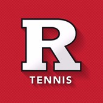
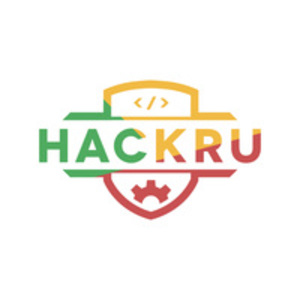
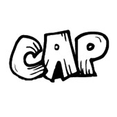
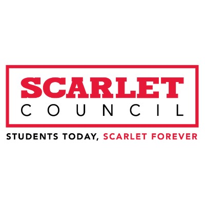

Home
Resume
About Me
Experience
Projects
Involvement
Involvement

Rutgers Club Tennis Travel Team
Travel Team Member
September 2019 - Present
I play tennis!
USACS
Tech Director
September 2019 - Present
I inspire the CS community at Rutgers to keep learning, coding, and building projects!

HackRU
Project Lead
September 2020 - Present
I help build software for Rutgers University's largest hackathon!

College Avenue Players
Actor
February 2021 - Present
I perform in sketches and shows at Rutgers!

Scarlet Council
Member
December 2019 - January 2021
Promoted Rutgers school spirit and bridged the gap between students and alumni.
Made by Samuel Ping |
samuel.y.ping@gmail.com